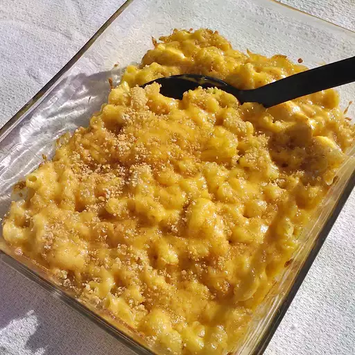

Mac n Cheese:
This is a completely unpretentious, down-home macaroni and cheese recipe just like
my grandma and mom always made. A simple white sauce where you add cheese and a
few other flavors with macaroni and a potato chip crust. This recipe makes a lot,
I like to make two pans so I can take one to a pot luck and have the other one to
keep in the fridge for later. It's an easy recipe to adjust down if you only want to
make one pan. If you aren't cooking it right away, just keep the topping separate until
you are ready to put it in the oven.
Necessary Ingredients:
- 2 cups elbow macaroni
- 4 tablespoons butter
- 4 tablespoons all-purpose flour
- 2 cups milk
- 2 cups shredded cheddar cheese
- 1/2 teaspoon salt
- 1/4 teaspoon black pepper
- 1/4 teaspoon paprika (optional)
- 1/2 cup breadcrumbs (optional, for topping)
Directions to Prepare:
- Cook the macaroni according to the package instructions until al dente. Drain and set aside.
- In a large saucepan, melt the butter over medium heat.
- Whisk in the flour and cook, stirring constantly, for about 1-2 minutes to form a roux.
- Gradually whisk in the milk, continuing to stir until the mixture is smooth and begins to thicken.
- Reduce the heat to low and add the shredded cheddar cheese, stirring until the cheese is completely melted and the sauce is smooth.
- Season the cheese sauce with salt, black pepper, and paprika (if using).
- Add the cooked macaroni to the cheese sauce and stir until the pasta is evenly coated.
- If desired, transfer the mac n' cheese to a baking dish and sprinkle breadcrumbs on top for added texture.
- Bake in a preheated oven at 350°F (175°C) for 20-25 minutes, or until the top is golden brown and the sauce is bubbly.
- Remove from the oven, let it cool slightly, and serve warm.